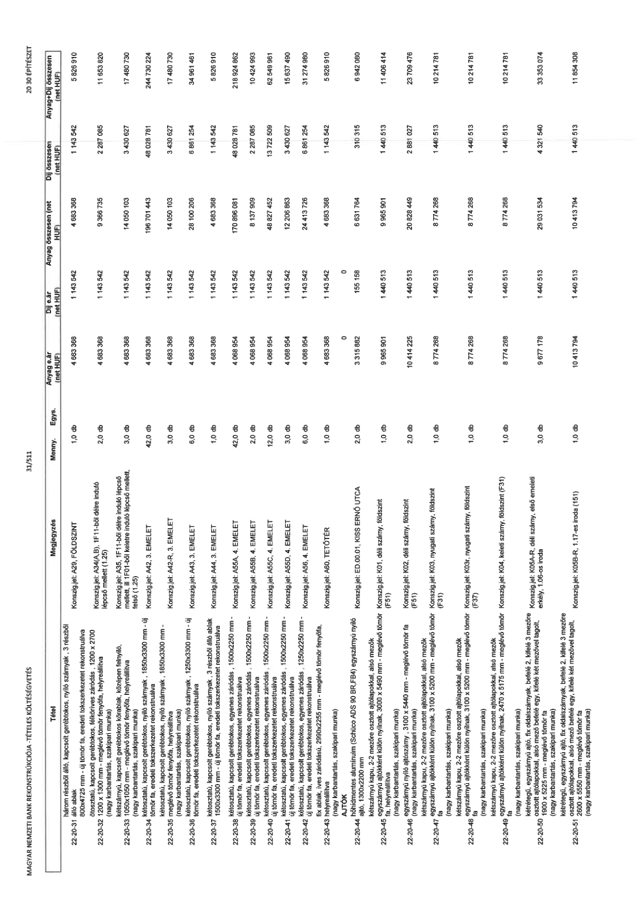

| Tétel | Megjegyzés | Menny. | Egys. | Anyag e.ár (net HUF) | Díj e.ár (net HUF) | Anyag összesen (net HUF) | Díj összesen (net HUF) | Anyag+Díj összesen (net HUF) |
|---|---|---|---|---|---|---|---|---|
| 22-20-31 | Konszig jel: A29, FÖLDSZINT | 1,0 | db | 4 683 368 | 1 143 542 | 4 683 368 | 1 143 542 | 5 826 910 |
| 22-20-32 | Konszig jel: A34(A,B), 1F11-ből délre induló lépcső mellett (1.25) | 2,0 | db | 4 683 368 | 1 143 542 | 9 366 735 | 2 287 085 | 11 653 820 |
| 22-20-33 | Konszig jel: A35, 1F11-ből délre induló lépcső mellett, ill 1F01-ből keletre induló lépcső mellett, felső (1.25) | 3,0 | db | 4 683 368 | 1 143 542 | 14 050 103 | 3 430 627 | 17 480 730 |
| 22-20-34 | Konszig jel: A42, 3. EMELET | 42,0 | db | 4 683 368 | 1 143 542 | 196 701 443 | 48 028 781 | 244 730 224 |
| 22-20-35 | Konszig jel: A42-R, 3. EMELET | 3,0 | db | 4 683 368 | 1 143 542 | 14 050 103 | 3 430 627 | 17 480 730 |
| 22-20-36 | Konszig jel: A43, 3. EMELET | 6,0 | db | 4 683 368 | 1 143 542 | 28 100 206 | 6 861 254 | 34 961 461 |
| 22-20-37 | Konszig jel: A44, 3. EMELET | 1,0 | db | 4 683 368 | 1 143 542 | 4 683 368 | 1 143 542 | 5 826 910 |
| 22-20-38 | Konszig jel: A55A, 4. EMELET | 42,0 | db | 4 068 954 | 1 143 542 | 170 896 081 | 48 028 781 | 218 924 862 |
| 22-20-39 | Konszig jel: A55B, 4. EMELET | 2,0 | db | 4 068 954 | 1 143 542 | 8 137 909 | 2 287 085 | 10 424 993 |
| 22-20-40 | Konszig jel: A55C, 4. EMELET | 12,0 | db | 4 068 954 | 1 143 542 | 48 827 452 | 13 722 509 | 62 549 961 |
| 22-20-41 | Konszig jel: A55D, 4. EMELET | 3,0 | db | 4 068 954 | 1 143 542 | 12 206 863 | 3 430 627 | 15 637 490 |
| 22-20-42 | Konszig jel: A56, 4. EMELET | 6,0 | db | 4 068 954 | 1 143 542 | 24 413 726 | 6 861 254 | 31 274 980 |
| 22-20-43 | Konszig jel: A60, TETŐTÉR | 1,0 | db | 4 683 368 | 1 143 542 | 4 683 368 | 1 143 542 | 5 826 910 |
| AJTÓK | NaN | NaN | NaN | 0 | 0 | 0 | 0 | 0 |
| 22-20-44 | Konszig jel: ED.00.01, KISS ERNŐ UTCA | 2,0 | db | 3 315 882 | 155 158 | 6 631 764 | 310 315 | 6 942 080 |
| 22-20-45 | Konszig jel: K01, déli szárny, földszint (F51) | 1,0 | db | 9 965 901 | 1 440 513 | 9 965 901 | 1 440 513 | 11 406 414 |
| 22-20-46 | Konszig jel: K02, déli szárny, földszint (F51) | 2,0 | db | 10 414 225 | 1 440 513 | 20 828 449 | 2 881 027 | 23 709 476 |
| 22-20-47 | Konszig jel: K03, nyugati szárny, földszint (F31) | 1,0 | db | 8 774 268 | 1 440 513 | 8 774 268 | 1 440 513 | 10 214 781 |
| 22-20-48 | Konszig jel: K03r, nyugati szárny, földszint (F37) | 1,0 | db | 8 774 268 | 1 440 513 | 8 774 268 | 1 440 513 | 10 214 781 |
| 22-20-49 | Konszig jel: K04, keleti szárny, földszint (F31) | 1,0 | db | 8 774 268 | 1 440 513 | 8 774 268 | 1 440 513 | 10 214 781 |
| 22-20-50 | Konszig jel: K05A-R, déli szárny, első emeleti erkély, 1.06-os iroda | 3,0 | db | 9 677 178 | 1 440 513 | 29 031 534 | 4 321 540 | 33 353 074 |
| 22-20-51 | Konszig jel: K05B-R, 1.17-es iroda (151) | 1,0 | db | 10 413 794 | 1 440 513 | 10 413 794 | 1 440 513 | 11 854 308 |
